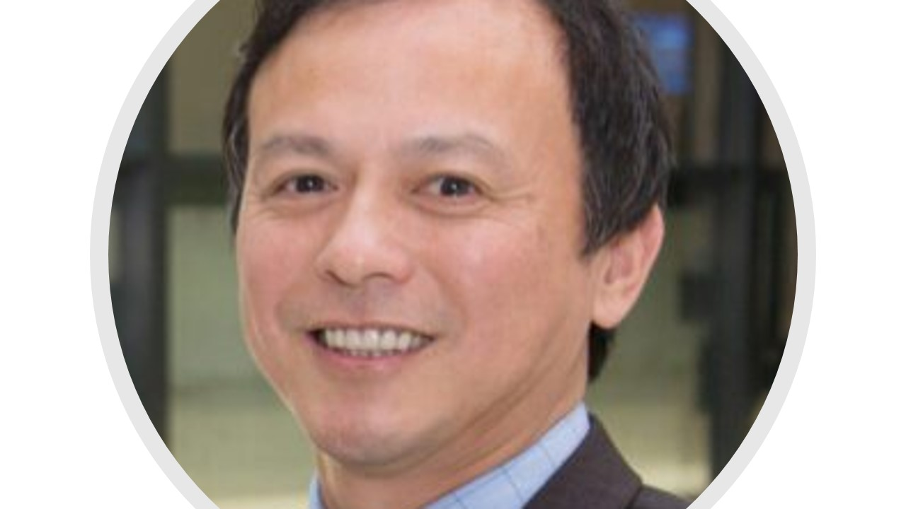
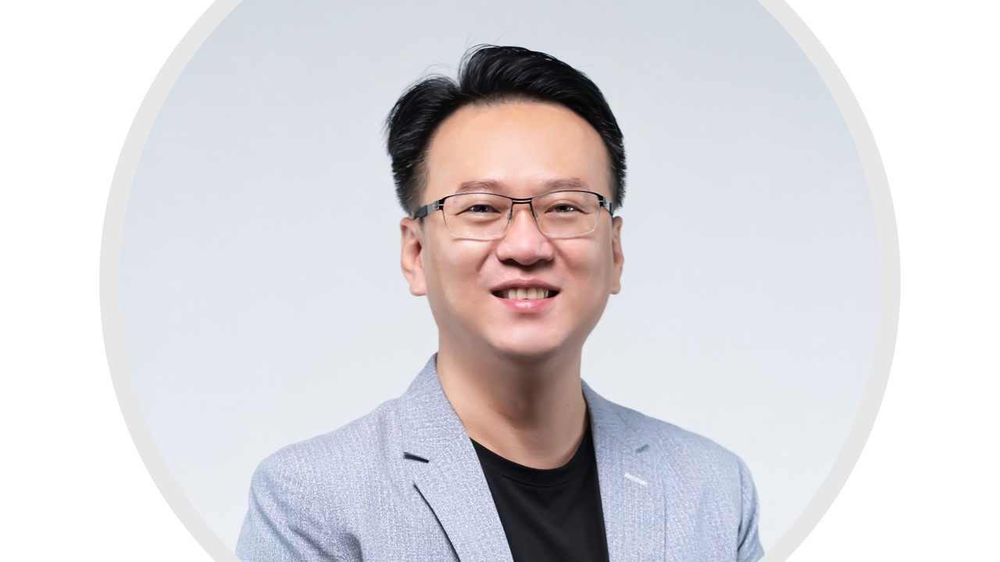
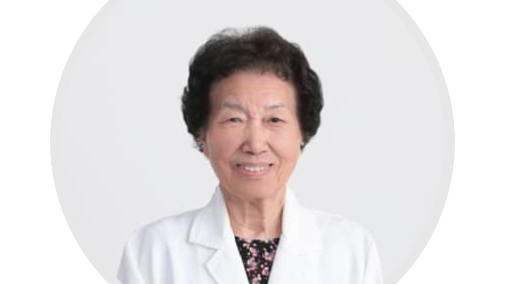
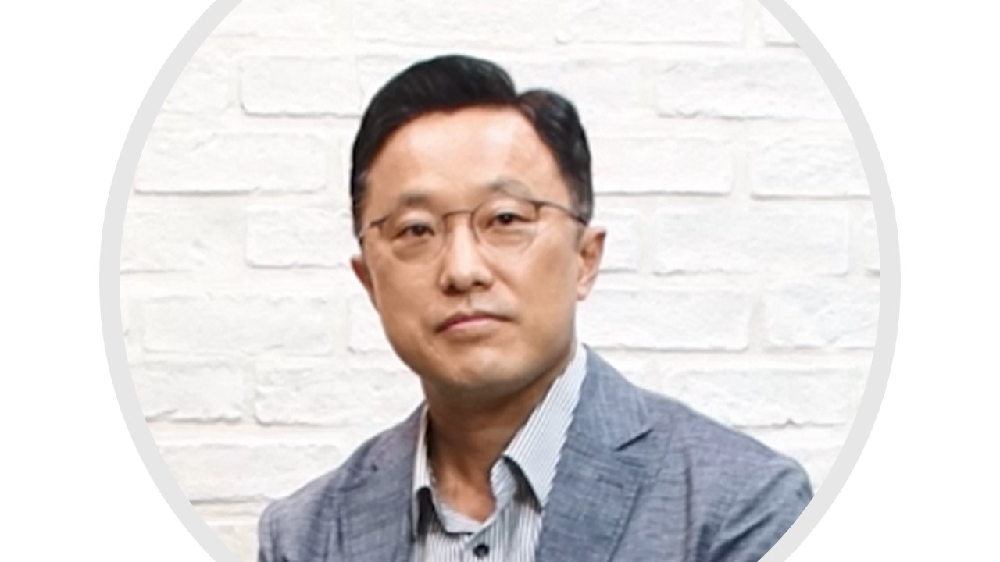
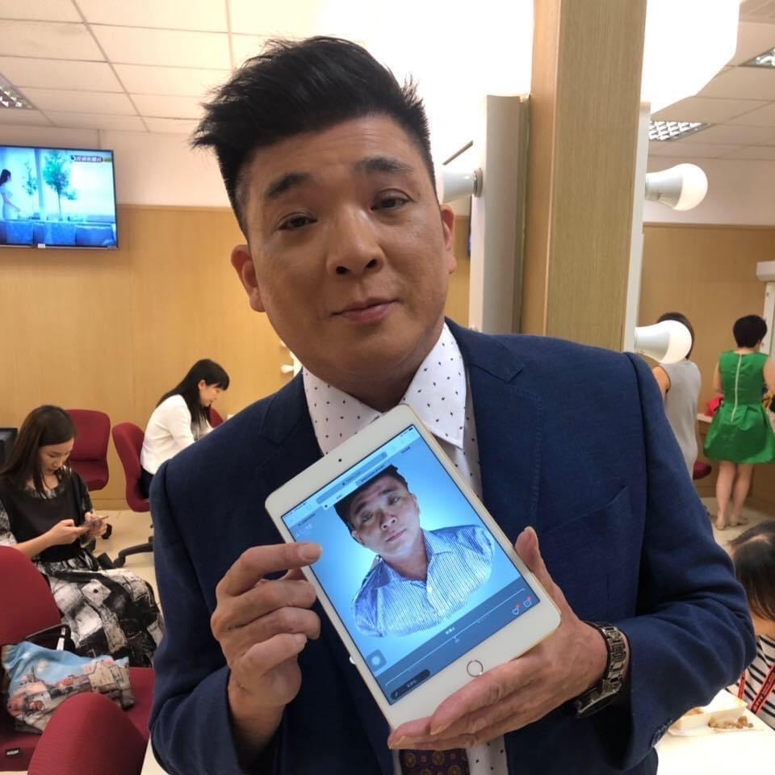
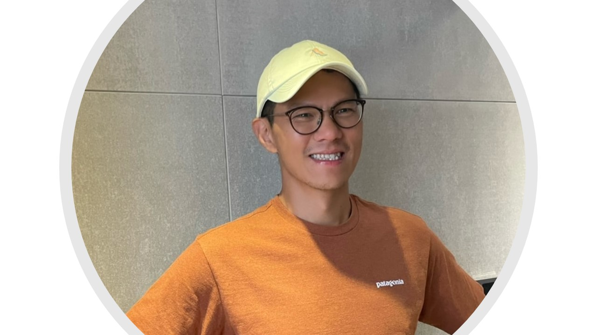

Introduction
The Avatar Medicine Forum promotes the concept of virtual and physical avatars for patient therapy. Let everyone understand that avatar medicine may reduce the risks that patients need to bear during the treatment process, and it can overcome the limitations of distance and time. The advanced technologies include organoids, model organisms, big data, metaverse, etc. The general public can understand from a new perspective that these technologies have the potential to replace patients themselves and reduce medical risks. At the same time, the forum connects academic and industrial circles, so that potential technologies and products can be demonstrated. This forum invites heavyweight speakers from industry, government, academia, and research circles to share with us the changes and evolution of avatar medicine brought by the post-epidemic era. It is hoped that in the near future, through big data, AI, AR/VR/XR or NFT, virtual avatars can be realized in clinical and teaching.
Speakers
Honored Guest
-

-

-

Speakers
-

-

-

Agenda
- –
Opening Remark
- Opening RemarkMichael C. Lu · Dean UC Berkeley School of Public Health
- Opening RemarkChing-cheng Chuang · Legislator Legislative Yuan, Republic of China (Taiwan)
- Opening RemarkJacqueline Whang-Peng · Academician Academia Sinica, R.O.C.
- –
Physical Avatar
- Mice & Avatar medicineMi-Hua Tao · CEO Translational Medicine Division, Biomedical Translation Research Center (BioTReC), Academia Sinica, R.O.C.
- 3D Print & Avatar medicineShawn Chae · CMO CLECELL Co., Ltd.
- Avatar in Clinical unmet needLong-Sheng Lu · Director Center for Cell Therapy, Taipei Medical University Hospital, Taiwan
- –
Virtual Avatar
- Data & Avatar medicineChing-Yung Lin · CEO Graphen Taiwan Inc.
- AR/VR & Avatar medicineRay Lin · CEO ARK GROUP Co. Ltd.
- Fitness in metaverseJac Hsieh · CEO FITION INC.
- –
Closing Remark
- Closing RemarkTing-I Chan · Vice President Digital Transformation Association (DTA)
Videos
9 talks
Opened via file://, so YouTube blocks embedded playback (Error 153); thumbnails open YouTube instead. Deployed pages and python -m http.server previews play normally.
-
Opening Remark
-
Opening Remark
-
Opening Remark
-
Mice & Avatar medicine
-
3D Print & Avatar medicine
-
Avatar in Clinical unmet need
-
AR/VR & Avatar medicine
-
Fitness in metaverse
-
Closing Remark
FAQ
What is Avatar Medicine?
Avatar Medicine is to build virtual or physical twins for patients, and it decreases the risk which patients have to take during their treatments. Also, it breaks the limit of distance and time.
What is physical twin?
Physical twins usually comes from human biopsy, or they can be a model that are similar to human. They can simulate certain syndromes of human diseases. Through observing their reactions to environmental stimuli, we can do research, diagnoses and offer help in treatment.
What is virtual twin?
Virtual twins build images and models by analyzing and digitalizing data from human. By operating a predictive program, virtual twins can provide clinical consultation, diagnoses and assistance in treatment.
What is Metaverse?
Metaverse is a world made of AI, VR, 5G, big data, digital assets and virtual identity. You can work, have fun, shop and play games in it.
What is the fee for Avatar Medicine Forum?
ZERO. Our Forum is free of charge. It only takes you 2 hours.
How to register?
Go to the event website, click the link and leave your contact information!
Partners

Read more
CancerFree Biotech